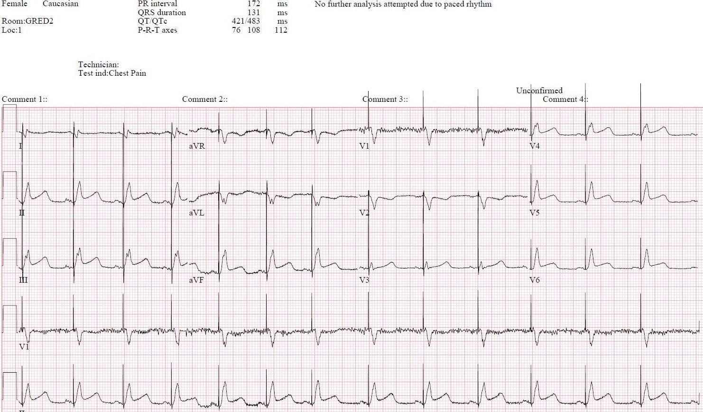
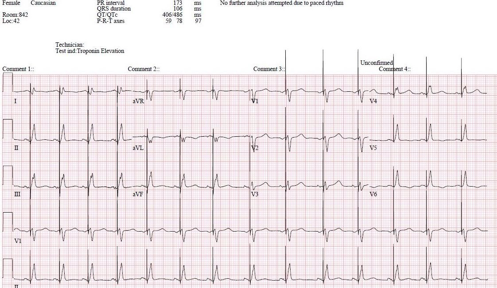
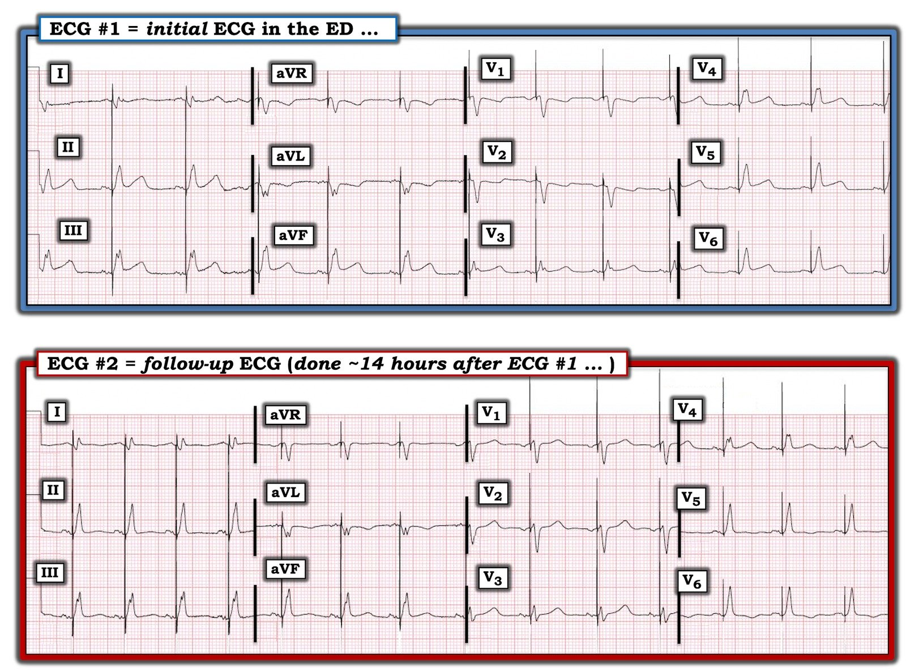

05/10/2020 — Bác sĩ tim mạch cần giữ tư duy cởi mở, biết lắng nghe và học hỏi từ bác sĩ cấp cứu
Bản dịch tiếng Việt của bài "Cardiologists need to keep an open mind and be capable of listening to, and learning from, the Emergency Physician" – Dr. Smith’s ECG Blog. Giữ nguyên toàn bộ 6 hình ảnh của bản gốc.
Ca này do một độc giả gửi đến. Anh ấy muốn giấu tên nhưng cũng muốn bày tỏ sự trân trọng đối với công việc tuyệt vời mà bác sĩ nội trú năm thứ 4 của anh ấy đã làm. Cô ấy đã nhận ra OMI ngay lập tức và làm mọi điều có thể, qua nhiều lần trao đổi với khoa tim mạch, để bênh vực cho bệnh nhân và cho nhu cầu đưa bệnh nhân vào phòng thông tim (cath lab).
Đáng tiếc là họ đã không lắng nghe và không học hỏi.
Tôi muốn khen ngợi chính các bác sĩ tim mạch của chúng tôi tại Hennepin, những người không chỉ cực kỳ am hiểu mà còn rất cởi mở với thông tin mới từ chúng tôi, những bác sĩ cấp cứu. Chúng tôi trân trọng điều đó!
Bệnh nhân nữ 68 tuổi đến viện lúc 3 giờ chiều vì đau ngực mà theo bệnh sử thì nghe giống cảm giác khó chịu do thiếu máu cục bộ:


Phần kết quả đọc bằng máy tính bị cắt mất ghi rằng:
“Nhịp nhận cảm nhĩ, tạo nhịp thất.”
Bạn có thể thấy máy cũng ghi “Không phân tích thêm do nhịp tạo nhịp”
Bạn nghĩ gì?
Đây rõ ràng là một điện tâm đồ dương tính trong bối cảnh nhịp tạo nhịp theo CẢ tiêu chuẩn Sgarbossa lẫn tiêu chuẩn Sgarbossa cải biên.
Dương tính ở 6 chuyển đạo!! (Có ST chênh lên đồng hướng ở II, III, aVF và V4-V6). Có ST chênh xuống soi gương đồng hướng ở aVL. Không thể nhầm lẫn!!
Có ST chênh xuống đồng hướng gần 1 mm ở V2.
Bác sĩ cấp cứu đã kích hoạt phòng thông tim.
Bạn nghĩ bác sĩ tim mạch đã nói gì?
Bạn đoán đúng rồi đấy!!
Khoa tim mạch đã “từ chối” phòng thông tim dù đã trao đổi rất nhiều. Bác sĩ tim mạch liên tục nói với bác sĩ nội trú khoa cấp cứu: “Tại sao bạn cứ nhắc mãi đến Sgarbossa vậy?”
Kết quả troponin I thế hệ hiện hành (contemporary) ban đầu trả về âm tính ở mức 0,01 ng/mL. Hãy nhớ rằng troponin ban đầu, ngay cả khi là loại độ nhạy cao, thường bình thường trong OMI và thậm chí trong OMI STEMI dương tính (STEMI (+) OMI)!!
Siêu âm tim khẩn (Stat Echo) được thực hiện tại khoa nội trú sau khi nhập viện. Kết quả cho thấy rối loạn vận động thành dưới-bên. Hiển nhiên thôi. Họ nghĩ nó sẽ cho thấy điều gì khác chứ?
Đến 5 giờ sáng, troponin I đã lên 28 ng/mL. Đây là mức điển hình của một STEMI.
Một điện tâm đồ khác được ghi lại:


Mọi dấu hiệu thiếu máu cục bộ đều đã biến mất.
Điều này có thể là do tái tưới máu tự phát (tự tiêu huyết khối – autolysis) hoặc do nhồi máu cơ tim đã hoàn tất, nhưng chỉ sau khi đã mất một lượng cơ tim đáng kể.
Có tới 36% số ca STEMI đã tự tiêu huyết khối lúc chụp mạch vành cấp cứu (1).
Một tỷ lệ cao hơn nhiều sẽ tái tưới máu vào ngày hôm sau, nhưng chỉ sau khi đã gây ra rất nhiều tổn thương.
Việc 25% (2) số ca NonSTEMI vẫn còn động mạch bị tắc khi chụp mạch vành vào ngày hôm sau (2) hàm ý rằng còn nhiều hơn hẳn 25% số ca OMI STEMI âm tính (STEMI (-) OMI) có động mạch bị tắc lúc đến viện.
Bệnh nhân được đưa đi chụp mạch vành lúc 11 giờ sáng:
LAD đoạn giữa hẹp 80%, nhánh mũ OM1 hẹp 90%, RCA hẹp 70%. Tất cả đều thông.
Động mạch thủ phạm không được đề cập; có thể là OM1 hoặc RCA.
Bệnh nhân được chuyển đi đánh giá để phẫu thuật bắc cầu chủ vành (CABG).
Bình luận: Tôi chỉ trích bác sĩ tim mạch không phải vì người đó không biết về tiêu chuẩn Sgarbossa cải biên, hay không nhận ra OMI. Ai cũng có những mảng kiến thức mà mình chưa quen thuộc. Đây là điều tôi chỉ trích: Người đó đã kiêu ngạo. Người đó đã không lắng nghe. Người đó đã không dừng lại để nghĩ rằng có lẽ mình có thể học được điều gì đó từ bác sĩ cấp cứu. Người đó đã không có một tư duy cởi mở. Người đó lẽ ra có thể nói: “Bạn có thể nói thêm cho tôi về tiêu chuẩn Sgarbossa được không?” Dù các bác sĩ chuyên khoa khó mà thừa nhận rằng có điều gì đó trong chính chuyên khoa của họ mà họ không biết còn một bác sĩ cấp cứu lại biết, thì thái độ đó vẫn là không thể chấp nhận được.
Năm 2016, trong một cuộc thăm dò không chính thức trên Medscape do người thầy của tôi, K. Wang, thực hiện cho thấy chỉ một nửa số bác sĩ tin rằng có thể chẩn đoán nhồi máu cơ tim trong bối cảnh nhịp tạo nhịp thất. Chúng tôi đã chứng minh trong nghiên cứu PERFECT (3) rằng điện tâm đồ khá chính xác khi dùng tiêu chuẩn Sgarbossa cải biên. Bản thảo đang được chỉnh sửa để gửi Annals of EM.

1. Rakowski T, Dudek D, Dziewierz A, và cs. Impact of infarct-related artery patency before primary PCI on outcome in patients with ST-segment elevation myocardial infarction: the HORIZONS-AMI trial. EuroIntervention [Internet] 2013;8(11):1307–14. Truy cập tại: http://dx.doi.org/10.4244/EIJV8I11A199
2. Khan AR và cs. 2017. Impact of total occlusion of culprit artery in acute non-ST elevation myocardial infarction: a systematic review and meta-analysis. doi:10.1093/eurheartj/ehx418
3. Nghiên cứu Perfect
Dù đúng là nhồi máu cơ tim cũ, được chẩn đoán dựa vào sóng Q, bị LBBB và nhịp tạo nhịp che lấp rất nhiều, nhồi máu cơ tim cấp do tắc dường như lại khá dễ chẩn đoán, gần như ngang với khi dẫn truyền bình thường. Khi dẫn truyền bình thường (tức là không có LBBB hay nhịp tạo nhịp), nhồi máu cơ tim do tắc mạch vành cấp (OMI) được chẩn đoán ở khoảng 75% số ca. 25% còn lại không được chẩn đoán cho đến khi được khẳng định bằng troponin và chụp mạch vành vào ngày hôm sau.(1)
1. Khan AR, Golwala H, Tripathi A, và cs. Impact of total occlusion of culprit artery in acute non-ST elevation myocardial infarction: a systematic review and meta-analysis. European Heart Journal 38(41):3082-3089; ngày 1 tháng Mười Một năm 2017. Trong nghiên cứu này, trong số 40.000 bệnh nhân NonSTEMI, có 10.000 người bị OMI mà không được chẩn đoán cho đến ngày hôm sau.
Chúng tôi đã chứng minh rằng tắc mạch vành cấp (ACO) (OMI) thực sự có thể được chẩn đoán khi có nhịp tạo nhịp với độ nhạy và độ đặc hiệu tương đương. Tuy nhiên, điều quan trọng cần nhận ra là nhiều OMI có thể khó chẩn đoán ở bất kỳ nhịp nào trên điện tâm đồ, và nhồi máu cơ tim không do tắc (NOMI) thường không thể chẩn đoán được trên điện tâm đồ.
Đây là bản tóm tắt của chúng tôi tại SAEM 2018. Chúng tôi đang viết bản thảo ngay lúc này, với nhiều bệnh nhân hơn được đưa vào nghiên cứu.
Tiêu chuẩn Sgarbossa cải biên theo Smith chẩn đoán chính xác tắc mạch vành cấp ở bệnh nhân khoa cấp cứu có nhịp tạo nhịp thất.
Kenneth W. Dodd1 , Deborah L. Zvosec2 , Michael A. Hart1 , Laura Bannister3 , Gary Mitchell4 , George Glass5 , Brooks Walsh6 , Harvey P. Meyers7 , David Miranda8 , James Corbett-Detig9 , Vaishal M. Tolia10, Louise Cullen11, Stuart Zarich6 , Sally Aldous12, William Brady5 , Timothy Henry13, Adam J. Singer14, Stephen W. Smith15, và Nhóm tác giả Nghiên cứu PERFECT 1 Hennepin County Medical Center, 2 Minneapolis Medical Research Foundation, 3
Bối cảnh: Tiêu chuẩn Sgarbossa cải biên theo Smith (MSC) thường được khuyến cáo để chẩn đoán tắc mạch vành cấp (ACO; tương đương STEMI) trong bối cảnh nhịp tạo nhịp thất (VPR). MSC dương tính nếu thỏa một trong các tiêu chuẩn sau ở ít nhất 1 chuyển đạo: ST chênh lên (STE) đồng hướng ít nhất 1 mm, ST chênh xuống đồng hướng ít nhất 1 mm ở V1-V3, hoặc tỷ số ST/S nhỏ hơn -0,25 ở các chuyển đạo có STE ít nhất 1 mm. Chúng tôi giả thuyết rằng MSC sẽ có độ nhạy cao hơn trong chẩn đoán ACO khi có VPR so với tiêu chuẩn Sgarbossa gốc. Phương pháp: Nghiên cứu PERFECT (#NCT02765477) là một nghiên cứu hồi cứu, quốc tế, tại 16 trung tâm, trên các bệnh nhân khoa cấp cứu (ED) từ 1/2008 – 12/2016 có VPR trên điện tâm đồ và triệu chứng của hội chứng vành cấp (ACS). Dữ liệu từ mười cơ sở được trình bày tại đây. Nhồi máu cơ tim cấp (AMI) được định nghĩa theo Định nghĩa toàn cầu lần thứ ba về AMI. Trong phân tích này, ACO được định nghĩa là có bằng chứng huyết khối mạch vành trên chụp mạch kèm troponin-I tim (cTn-I) đỉnh ít nhất 10 ng/mL hoặc cTn-T ≥ 1 ng/ mL. Các bác sĩ được làm mù đã thẩm định báo cáo chụp mạch về tổn thương mạch vành và điểm dòng chảy TIMI (thrombolysis in myocardial infarction). Một nhóm bác sĩ khác, cũng được làm mù, thực hiện các phép đo trên điện tâm đồ. Các nhân viên trích xuất dữ liệu đã được huấn luyện ghi nhận dữ liệu trên các mẫu chuẩn hóa. Thống kê bằng kiểm định Mann Whitney U, Chi bình phương và McNemar. Kết quả: Có 46 lượt khám trong nhóm ACO (tuổi trung vị 76 [IQR 65-82], 36 (76%) nam) và 79 trong nhóm không AMI (tuổi trung vị 70 [61-75], 48 (61%) nam). Với ACO, cTn-I đỉnh trung vị là 65 ug/L [IQR 35-239] và cTn-T là 3,3 ng/mL [IQR 2,2-8,3]. Với nhóm không AMI, cTn-I đỉnh trung vị là 0,015 ug/L [IQR 0-0,09]. Với ACO, độ nhạy và độ đặc hiệu của MSC và của tiêu chuẩn Sgarbossa gốc lần lượt là 83% (KTC 95% 68-91) so với 63% (48-76; p nhỏ hơn 0,005) và 99% (92-100) so với 99% (92-100; p = 0,5). Trong phân tích phân nhóm xác định trước ở các bệnh nhân có dòng chảy TIMI 0-1 và cTnI đỉnh ít nhất 10 ug/L hoặc cTnT đỉnh ít nhất 1 ng/mL (n = 29), độ nhạy là 87% (69-96) với MSC so với 58% (39-75) với tiêu chuẩn Sgarbossa gốc (p nhỏ hơn 0,05). Kết luận: Đây là nghiên cứu lớn nhất trên bệnh nhân có VPR và ACO được chứng minh bằng chụp mạch. MSC có độ nhạy và độ đặc hiệu cao trong chẩn đoán ACO ở bệnh nhân đến khoa cấp cứu với VPR và triệu chứng của hội chứng vành cấp.

===================================
BÌNH LUẬN CỦA TÔI, bởi KEN GRAUER, MD (5/10/2020):
===================================
Ca hôm nay là một ví dụ tuyệt vời cho thấy OMI cấp đôi khi có thể được nhận ra một cách chắc chắn ngay cả khi có sự hiện diện của tạo nhịp. Đáng tiếc là nhóm tim mạch đã không nhận ra điều này mặc dù có bệnh sử điển hình nghe giống thiếu máu cục bộ + bằng chứng rõ ràng trên điện tâm đồ — và siêu âm tim khẩn phù hợp với các dấu hiệu trên điện tâm đồ.
- Như chúng tôi đã minh họa trong rất nhiều ca trên Dr. Smith’s ECG Blog — Tiêu chuẩn Smith-Sgarbossa cải biên có thể được dùng để nhận diện khách quan OMI cấp ở cả bản ghi có LBBB lẫn bản ghi có tạo nhịp. Dr. Smith nhấn mạnh rằng điện tâm đồ ban đầu trong ca hôm nay dương tính theo các tiêu chuẩn này ở không dưới 6/12 chuyển đạo.
- Tôi xin bổ sung rằng xét từ góc độ định tính — điện tâm đồ ban đầu trong ca hôm nay cho thấy rõ những bất thường điện tâm đồ gợi ý OMI cấp ở không dưới 10/12 chuyển đạo!
Để cho rõ — tôi đã đặt cả hai điện tâm đồ của ca hôm nay cạnh nhau trong Hình 1.
- Xin hãy XEM LẠI một lần nữa điện tâm đồ #1. Trong bối cảnh một bệnh nhân lớn tuổi đến viện vì đau ngực mới khởi phát nghe giống thiếu máu cục bộ — NHỮNG chuyển đạo nào trên điện tâm đồ #1 là bất thường?
- NHỮNG vùng chuyển đạo giải phẫu nào bị ảnh hưởng?


Hình 1: 2 điện tâm đồ trong ca hôm nay (Xem phần bài viết).
SUY NGHĨ CỦA TÔI về điện tâm đồ #1: Theo kết quả đọc bằng máy tính — đây là nhịp nhận cảm nhĩ, tạo nhịp thất với 100% bắt nhịp thất.
- Tần số khoảng ~70-75/phút.
- Khi không biết các thông số tạo nhịp, và không biết điện tâm đồ không tạo nhịp của bệnh nhân này trông như thế nào — rất khó biết các phức bộ QRS mà chúng ta thấy ở đây có thể phản ánh phần nào sự hỗn hợp giữa dẫn truyền tự phát của sóng P xoang với các phức bộ do tạo nhịp thất đến mức nào (tức là khoảng PR có vẻ không quá 0,15 giây). Dù thế nào đi nữa — điểm cần nhấn mạnh là đôi khi người ta có thể đánh giá thay đổi ST-T do thiếu máu cục bộ cấp, ngay cả khi có 100% tạo nhịp.
Không dưới 10/12 chuyển đạo trên điện tâm đồ #1 có sóng ST-T bất thường.
- Có ST chênh lên 1 mm kèm sóng T trông như tối cấp ở mỗi chuyển đạo trong 3 chuyển đạo thành dưới = ở các chuyển đạo II, III và aVF. Đây không phải là hình dạng ST-T bình thường ở cả nhịp tạo nhịp lẫn nhịp tự phát. Nếu xét theo hướng sóng P tự phát đang được dẫn truyền — thì sóng T ở các chuyển đạo thành dưới rõ ràng trông đầy đặn ở đỉnh hơn mức mong đợi. Nếu xét theo hướng các phức bộ QRS ở chuyển đạo thành dưới là do tạo nhịp — thì bình thường người ta sẽ mong đợi sóng ST-T ngược hướng với các phức bộ QRS dương (và người ta sẽ không mong đợi có bất kỳ ST chênh lên nào).
- Việc những thay đổi ST-T ở chuyển đạo thành dưới này là “thật” — được củng cố bởi ST-T chênh xuống dạng hình soi gương mà chúng ta thấy ở chuyển đạo aVL.
- Thay đổi cấp ở chuyển đạo thành dưới thường đi kèm tổn thương thành sau cấp. Tổn thương thành sau này được gợi ý trên điện tâm đồ #1 bởi hình dạng ST-T bất thường ở các chuyển đạo V1 và V2.
- Sóng ST-T ở các chuyển đạo V3, V4, V5 và V6 trông giống nhau — và giống với hình dạng ST-T bất thường mà chúng ta thấy ở mỗi chuyển đạo thành dưới.
- NHẬN ĐỊNH: Bất kể các phức bộ QRS trên điện tâm đồ #1 là do tạo nhịp hay do dẫn truyền đến mức nào — những thay đổi ST-T bất thường mà chúng ta thấy ở người phụ nữ lớn tuổi bị đau ngực mới khởi phát này gợi ý OMI dưới-sau-bên cấp.
SUY NGHĨ CỦA TÔI về điện tâm đồ #2: Đặt 2 điện tâm đồ của ca hôm nay cạnh nhau giúp dễ dàng nhận ra các thay đổi liên tiếp:
- ST chênh lên và thay đổi sóng T tối cấp ở chuyển đạo thành dưới gần như đã hồi phục hoàn toàn.
- Tôi thấy hầu như không có thay đổi nào về hình dạng ST-T ở các chuyển đạo bên cao I và aVL giữa điện tâm đồ #1 và điện tâm đồ #2.
- Ở các chuyển đạo trước tim — sóng T ở V1 và V2 giờ đã dương. Có lẽ không có thay đổi đáng kể về hình dạng ST-T ở V3 và V4 — nhưng ST chênh lên nhẹ và thay đổi sóng T tối cấp thấy ở V5 và V6 trên điện tâm đồ #1 đã được thay bằng đoạn ST dẹt ở V5, và sóng T đảo ngược nông ở V6.
- ĐIỀU CỐT LÕI: Việc thấy những thay đổi không thể chối cãi ở 7 chuyển đạo giữa thời điểm ghi điện tâm đồ #1 và #2 cho thấy một cách thuyết phục rằng các bất thường ST-T nêu trên ở điện tâm đồ #1 thực sự là thay đổi cấp. Như Dr. Smith đã nêu — những thay đổi này trên điện tâm đồ #2 phù hợp với tái tưới máu tự phát ở một mức độ nào đó.
Những điểm cần học: Một hình ảnh đáng giá hơn 1.000 lời nói. Bất kể các phức bộ QRS trên điện tâm đồ #1 là do tạo nhịp hay do dẫn truyền đến mức nào — “hình ảnh” cần ghi nhớ là sự kết hợp giữa ST chênh lên, sóng T tối cấp và ST-T chênh xuống thấy ở rất nhiều (tức là 10/12) chuyển đạo ở một bệnh nhân bị đau ngực mới phải được đọc là OMI cho đến khi chứng minh được điều ngược lại.